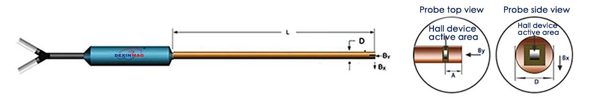
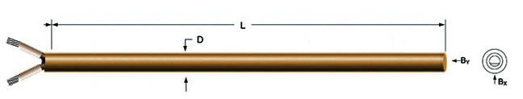

| Model | L(cm) approx | D(mm) max | A (mm) | Active area(mm) | Frequency range | Full Scale (Standard) | Magnetic linearity(%rdg) | Operating temp range | Temp coefficient (max) | Encapsulation material |
|---|---|---|---|---|---|---|---|---|---|---|
| 2ADX801F | 10/25/50 | 4 | 1±0.1 | 0.15 | DC-1kHz | 300kG | ±0.1% ~ 30kG | -10℃ ~ +75°C | ±0.03%/°C | Circular brass |
| 2ADX802F | 10/25/50 | 3 | 1±0.1 | 0.15 | DC-1kHz | 300kG | ±0.1% ~ 30kG | -10℃ ~ +75°C | ±0.03%/°C | Circular brass |
| 2ADX803F | 10/25/50 | 2 | 1±0.1 | 0.15 | DC-1kHz | 300kG | ±0.1% ~ 30kG | -10℃ ~ +75°C | ±0.03%/°C | Circular brass |
| 2ADX804F | 10/25/50 | 1.5 | 1±0.1 | 0.1 | DC-1kHz | 300kG | ±0.1% ~ 30kG | -10℃ ~ +75°C | ±0.03%/°C | Circular brass |
| 2ADX805F | 10/25/50 | 1.2 | 1±0.1 | 0.1 | DC-1kHz | 300kG | ±0.15% ~ 30kG | -10℃ ~ +75°C | ±0.03%/°C | Circular brass |
| 2ADX806F | 10/25/50 | 0.9 | 1±0.1 | 0.1 | DC-1kHz | 300kG | ±0.15% ~ 30kG | -10℃ ~ +75°C | ±0.03%/°C | Circular brass |
| 2ADX806F Square | 10/25/50 | 4 | 1±0.1 | 0.15 | DC-1kHz | 300kG | ±0.15% ~ 30kG | -10℃ ~ +75°C | ±0.03%/°C | Square brass |
| 2ADX807F Square | 10/25/50 | 2.5 | 1±0.1 | 0.15 | DC-1kHz | 300kG | ±0.15% ~ 30kG | -10℃ ~ +75°C | ±0.03%/°C | Square brass |
| Model | L(cm) approx | D(mm) max | A (mm) | Active area(mm) | Frequency range | Full Scale (Standard) | Magnetic linearity (%rdg) | Operating temp range | Temp coefficient (max) | Encapsulation material |
|---|---|---|---|---|---|---|---|---|---|---|
| 2ADX801FT | 10/25/50 | 5 | 1±0.1 | 0.15 | DC-1kHz | 30kG | ±0.15% ~ 30kG | -200°C ~ +200℃ | ±0.02%/°C | Circular brass |
| 2ADX802FT | 10/25/50 | 3 | 1±0.1 | 0.15 | DC-1kHz | 30kG | ±0.15% ~ 30kG | -200°C ~ +200℃ | ±0.02%/°C | Circular brass |
| 2ADX803FT | 10/25/50 | 2 | 1±0.1 | 0.1 | DC-1kHz | 30kG | ±0.15% ~ 30kG | -200°C ~ +200°C | ±0.02%/°C | Circular brass |
| 2ADX804FT | 10/25/50 | 1.5 | 1±0.1 | 0.1 | DC-1kHz | 30kG | ±0.5% ~ 30kG | -200°C ~ +200℃ | ±0.02%/°C | Circular brass |
| 2ADX805FT | 10/25/50 | 1.2 | 1±0.1 | 0.1 | DC-1kHz | 300kG | ±0.5% ~ 30kG | -200°C ~ +200°C | ±0.03%/°C | Circular brass |
| 2ADX806FT Square | 10/25/50 | 4 | 1±0.1 | 0.15 | DC-1kHz | 300kG | ±0.15% ~ 30kG | -200°C ~ +200°C | ±0.03%/°C | Square brass |
| 2ADX807FT Square | 10/25/50 | 2.5 | 1±0.1 | 0.15 | DC-1kHz | 300kG | ±0.15% ~ 30kG | -200°C ~ +200℃ | ±0.03%/°C | Square brass |

| Model | L(cm) approx | D(mm) max | Active area(mm) | Frequency range | Magnetic sensitivity | Magnetic linearity (%rdg) | Operating temp range | Unbalance voltage(mV) | Temp coefficient (max) | Encapsulation material |
|---|---|---|---|---|---|---|---|---|---|---|
| 2ADX801A | 10/25/50 | 3.5 | 0.15 | DC-1KHZ | 2.5 to 15 mV/KG | <±0.2% to 30kG | -20°C to +70°C | ≤±0.10 | -0.03%/°C | Brass |
| 2ADX801B | 10/25/50 | 3.5 | 0.15 | DC-1KHZ | <±0.3% to 30kG | -20°C to +70°C | ≤±0.20 | -0.03%/°C | Brass | |
| 2ADX802A | 10/25/50 | 2 | 0.15 | DC-1KHZ | <±0.2% to 30kG | -20°C to +70°C | ≤±0.10 | -0.03%/°C | Brass | |
| 2ADX802B | 10/25/50 | 2 | 0.15 | DC-1KHZ | <±0.3% to 30kG | -20°C to +70°C | ≤±0.20 | -0.03%/°C | Brass | |
| 2ADX803A | 10/25/50 | 1.5 | 0.15 | DC-1KHZ | <±0.2% to 30kG | -20°C to +70°C | ≤±0.10 | -0.03%/°C | Brass | |
| 2ADX803B | 10/25/50 | 1.5 | 0.15 | DC-1KHZ | <±0.3% to 30kG | -20°C to +70°C | ≤±0.20 | -0.03%/°C | Brass | |
| 2ADX804A | 10/25/50 | 1.2 | 0.1 | DC-1KHZ | <±0.2% to ±10kG <±2% to ±30kG | -20°C to +70°C | ≤±0.10 | -0.03%/°C | Brass | |
| 2ADX804B | 10/25/50 | 1.2 | 0.1 | DC-1KHZ | <±0.2% to ±10kG <±3% to ±30kG | -20°C to +70°C | ≤±0.20 | -0.03%/°C | Brass | |
| 2ADX805A | 10/25/50 | 0.9 | 0.1 | DC-1KHZ | 2.5 to 15 mV/KG | <±0.2% to ±10kG <±2% to ±30kG | -20°C to +70°C | ≤±0.10 | -0.03%/°C | Brass |
| 2ADX805B | 10/25/50 | 0.9 | 0.1 | DC-1KHZ | <±0.3% to ±10kG <±3% to ±30kG | -20°C to +70°C | ≤±0.20 | -0.03%/°C | Brass |